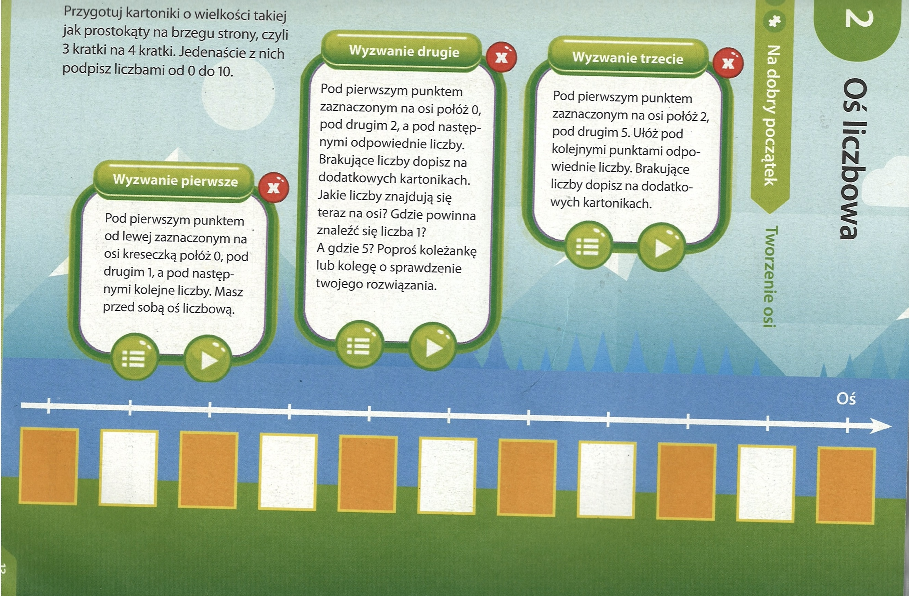
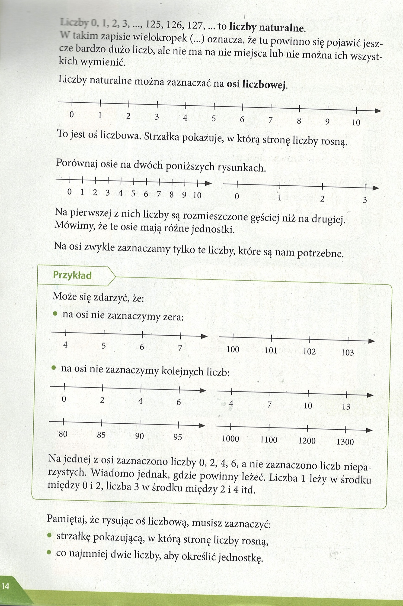
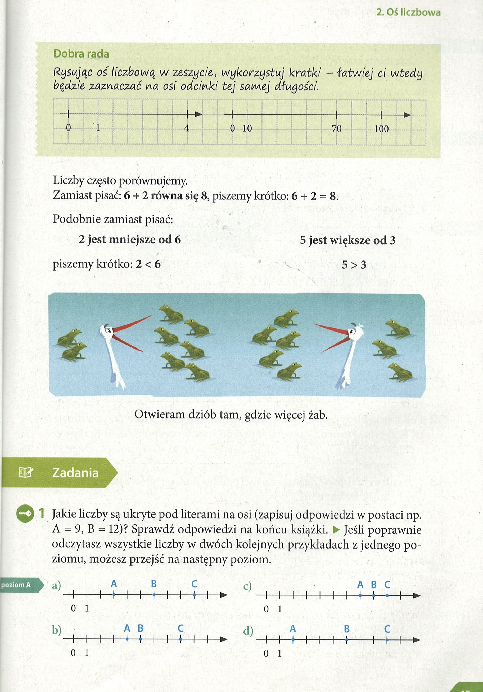
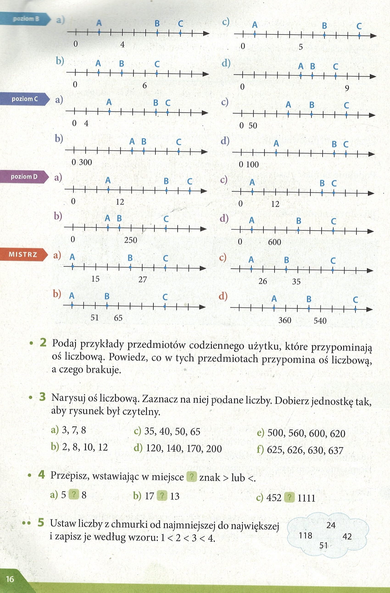
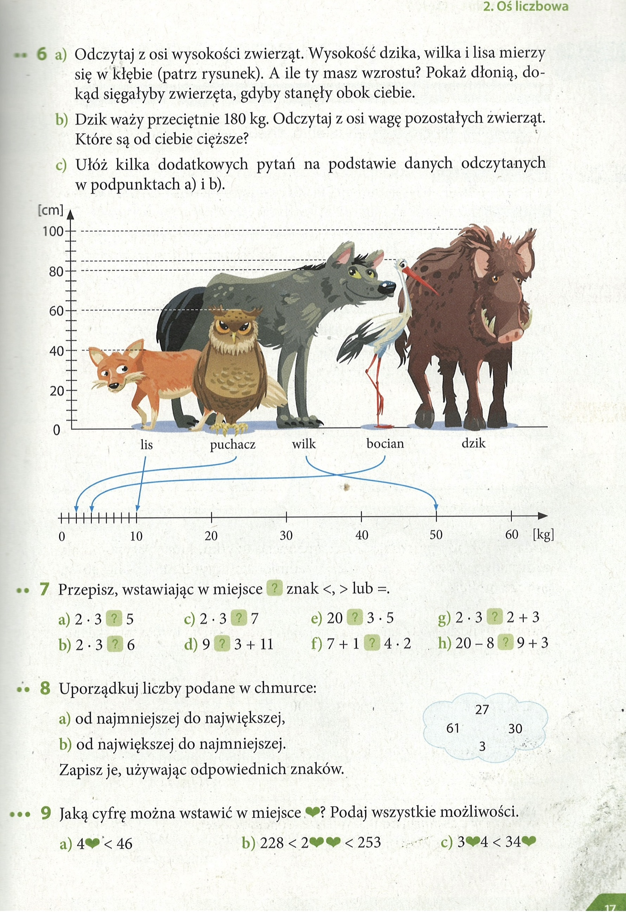
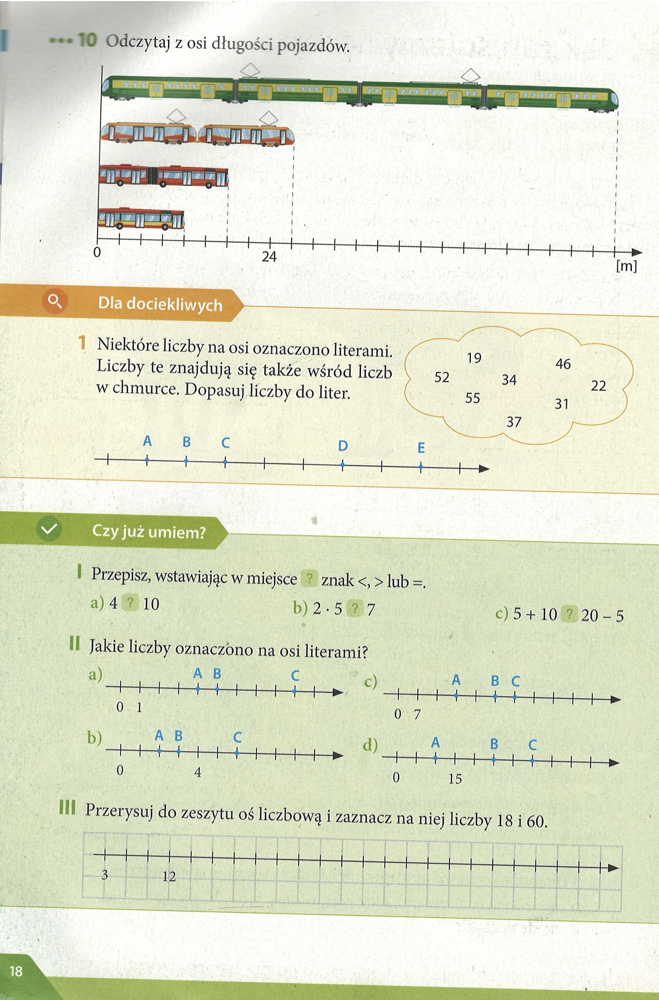

Matematyka
Liczby naturalne - czesc 1
Lekcja 02. Числовая прямая: расположение чисел, соседние числа. str 13
Oś liczbowa
👉 Co to jest oś liczbowa?
- To prosta linia, na której zaznaczamy liczby w odpowiedniej kolejności.
- Zaczynamy od zera (0) i dalej zaznaczamy: 1, 2, 3, 4, 5, …
- Każda liczba ma swoje miejsce na tej prostej.
Jak wygląda?
Wyobraź sobie linijkę:
0 ── 1 ── 2 ── 3 ── 4 ── 5 ── 6 ── 7 ── 8 ── 9 ── …
Każda kreska to kolejna liczba naturalna.
Sąsiednie liczby (liczby sąsiednie)
- Każda liczba ma dwie liczby sąsiednie – jedną po lewej i jedną po prawej.
-
Przykład:
- Sąsiednie liczby dla 5 to 4 i 6.
- Sąsiednie liczby dla 10 to 9 i 11.
- 👉 Wyjątek: liczba 0 ma tylko jednego sąsiada (po prawej), czyli 1, bo po lewej stronie nie ma już liczb naturalnych.
strona 13

strona 14
Liczby 0, 1, 2, 3, ..., 125, 126, 127, ... to liczby naturalne.
W takim zapisie wielokropek (...) oznacza, że tu powinno się pojawić jeszcze bardzo dużo liczb, ale nie ma na nie miejsca lub nie można ich wszystkich wymienic.
Liczby naturalne można zaznaczać na osi liczbowej.
0 ── 1 ── 2 ── 3 ── 4 ── 5 ── 6 ── 7 ── 8 ── 9 ──>
To jest oś liczbowa. Strzałka pokazuje, w którą stronę liczby rosną.
Porównaj osie na dwóch poniższych rysunkach.
0 -1 - 2 - 3 - 4 - 5 ->
0 ── 1 ── 2 ── 3 ── 4 ── 5 ──>
Na pierwszej z nich liczby są rozmieszczone gęściej niż na drugiej.
Mówimy, że te osie mają różne jednostki.
Na osi zwykle zaznaczamy tylko te liczby, które są nam potrzebne.
Pamietaj, ze rysujac os liczbowa, musisz zaznaczyé:
- strzatke pokazujaca, w która strone liczby rosna,
- co najmniej dwie liczby, aby okreslic jednostke.

strona 15

Dobra rada
Rysując oś liczbową w zeszycie, wykorzystuj kratki - łatwiej ci wtedy będzie zaznaczać na osi odcinki tej samej dtugości.
Liczby często porównujemy.
Zamiast pisac: 6 + 2 równa się 8, piszemy krótko: 6 + 2 = 8.
Zadanie 1 Poziom A, a) - strona 15
Odczytaj z osi liczbowej, jakie wartości liczbowe przyjmuje każda z liter. Pamiętaj, żeby zwrócić uwagę, jaką jednostkę ma oś.
A = 3
B = 6
C = 9
Zadanie 1 Poziom A, b) - strona 15
Odczytaj z osi liczbowej, jakie wartości liczbowe przyjmuje każda z liter. Pamiętaj, żeby zwrócić uwagę, jaką jednostkę ma oś.
A = 4
B = 5
C = 8
Zadanie 1 Poziom A, c) - strona 15
Odczytaj z osi liczbowej, jakie wartości liczbowe przyjmuje każda z liter. Pamiętaj, żeby zwrócić uwagę, jaką jednostkę ma oś.
A = 7
B = 8
C = 9
Zadanie 1 Poziom A, d) - strona 15
Odczytaj z osi liczbowej, jakie wartości liczbowe przyjmuje każda z liter. Pamiętaj, żeby zwrócić uwagę, jaką jednostkę ma oś.
A = 2
B = 6
C = 9
strona 16
Zadanie 1 Poziom B - strona 16
Odczytaj z osi liczbowej, jakie wartości liczbowe przyjmuje każda z liter. Pamiętaj, żeby zwrócić uwagę, jaką jednostkę ma oś.
a) A = 2; B = 7; C = 9
b) A = 2; B = 4; C = 7
c) A = 1; B = 7; C = 10
d) A = 5; B = 6; C = 8
Zadanie 1 Poziom C - strona 16
Odczytaj z osi liczbowej, jakie wartości liczbowe przyjmuje każda z liter. Pamiętaj, żeby zwrócić uwagę, jaką jednostkę ma oś.
a) A = 12; B = 28; C = 32
b) A = 1500; B = 1800; C = 2700
c) A = 200; B = 300; C = 450
d) A = 300; B = 800; C = 900
Zadanie 1 Poziom D - strona 16
Odczytaj z osi liczbowej, jakie wartości liczbowe przyjmuje każda z liter. Pamiętaj, żeby zwrócić uwagę, jaką jednostkę ma oś.
a) A = 9; B = 24; C = 30
b) A = 150; B = 200; C = 450
c) A = 4; B = 28; C = 32
d) A = 200; B = 100; C = 1600
Zadanie 1 Poziom Mistrz - strona 16
Odczytaj z osi liczbowej, jakie wartości liczbowe przyjmuje każda z liter. Pamiętaj, żeby zwrócić uwagę, jaką jednostkę ma oś.
a) A = 9; B = 24; C = 33
b) A = 37; B = 58; C = 93
c) A = 23; B = 32; C = 44
d) A = 300; B = 480; C = 720
Zadanie 2 - strona 16
Musisz wypisać przedmioty, które przypominają oś liczbową oraz napisać, co mają z nią wspólnego, a co się nie zgadza.
Przykładem takiego przedmiotu może być linijka, ma ona podziałkę z równą jednostką, ale nie ma strzałki pokazującej kierunek wzrostu liczb. Taka sama sytuacja jest z termometrem albo miarką.
Zadanie 3 - strona 16
Musisz narysować czytelną oś liczbową przedstawiającą liczby z tego podpunktu.


Zadanie 4 - strona 16
Musisz zdecydować, która liczba jest mniejsza, a która większa.
a) 5 < 8
b) 17 > 13
c) 452 < 1111

Zadanie 5 - strona 16
Musisz ustawić liczby z chmurki od najmniejszej do największej.
24 < 42 < 51 < 118
strona 17

Zadanie 6, a) - strona 17
Wskaż, jak wysokie względem ciebie byłyby zwierzęta z osi.
Lis – 40 cm
Puchacz – 60 cm
Wilk – 80 cm
Bocian – 85 cm
Dzik – 100 cm
Zadanie 6, b) - strona 17
Odczytaj wagę pozostałych zwierząt z osi i wskaż, które są od ciebie cięższe.
Lis 10kg, puchacz 2kg, wilk 50 kg, bocian 4kg
Zależnie od własnej wagi, sam wskaż, które zwierzęta są od ciebie cięższe.
Zadanie 6, c) - strona 17
Ułóż pytania, na które możesz znaleźć odpowiedź na podanej osi.
Przykładowe pytania:
1. Jak wysoki jest lis?
2. Jaka jest różnica w wysokości dzika i wilka?
3. O ile kilogramów bocian jest cięższy od puchacza?
Zadanie 7 - strona 17
Wstaw jeden ze znaków <,>, = w miejsce ? w działaniu.
a) 2 · 3 > 5
b) 2 · 3 = 6
c) 2 · 3 < 7
d) 9 < 3 + 11
e) 20 > 3 · 5
f) 7 + 1 = 4 · 2
g) 2 · 3 > 2 + 3
h) 20 – 8 > 9 + 3
Zadanie 8 - strona 17
Uporządkuj liczby z chmurki.
Uporządkuj rosnąco liczby z chmurki.
a) 3 < 27 < 30 < 61
Uporządkuj malejąco liczby z chmurki.
b) 61 < 30 < 27 < 3
Zadanie 9 - strona 17
Jaką cyfrę można wstawić w miejsce ❤️? Podaj wszystkie możliwości.
a) Zamiast ♥ można wstawić 0,1,2,3,4,5.
b) Zamiast ♥ można wstawić 3, 4.
strona 18
Zadanie 10 - strona 18
Patrząc na oś, odczytaj, jak długi jest każdy z pojazdów.
Pociąg – 72 m,
tramwaj – 27 m,
autobus przegubowy – 18 m,
autobus – 12 m.
Dla dociekliwych - strona 18
Do liczb z chmurki dopasuj odpowiadające im liczby na osi.
A = 31; B = 34; C = 37; D = 46; E = 52
Czy już umiem? zadanie I - strona 18
Wstaw znak <, > lub =, żeby otrzymać poprawne działanie.
a) 4 < 10
b) 2 · 5 > 7
c) 5 + 10 = 20 – 5
Czy już umiem? zadanie II - strona 18
Ustal, jakie wartości przyjmuje każda z liter.
a) A = 4; B = 5; C = 9
b) A = 2; B = 3; C = 6
c) A = 21; B = 35; C = 42
d) A = 10; B = 25; C = 35
Czy już umiem? zadanie III - strona 18
Musisz narysować oś i zaznaczyć na niej liczy 18 i 60. Jednostka osi to 3.

